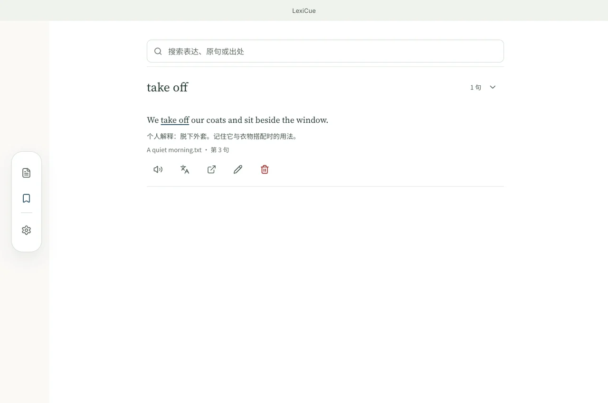
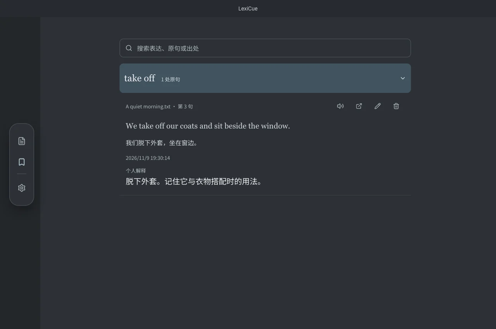

已保存的语境
“已保存”将表达、词典参考与遇见它的地方放在一起。
本页目录
查找已保存的表达
打开“已保存”搜索表达，展开查看各次保存的语境。同一表达可以保留多个来源原句。



编辑一条语境
在对应收藏记录修改注释或解释。在“已保存”或查词卡片的“我的记录”中，点击原句旁的“移除这句”，可用“撤销”恢复。同一表达的其他语境各自独立。
下滑后，底部圆角悬浮页码可直接跳页。词条和词条内的语境分别分页。左滑整个词条，再点垃圾桶，可删除这个词条及其全部例句、释义和笔记；小型浮动通知中的“撤销”可一起恢复。原材料不会被删除。只移除一条例句时，其他例句仍保留。
返回来源
点击语境的来源打开原材料和对应句子。使用纯图标返回按钮回到此前页面，保留搜索、页码、滚动位置和展开例句。来源缺失或已删除时无法打开，已保存的语境仍可查看。